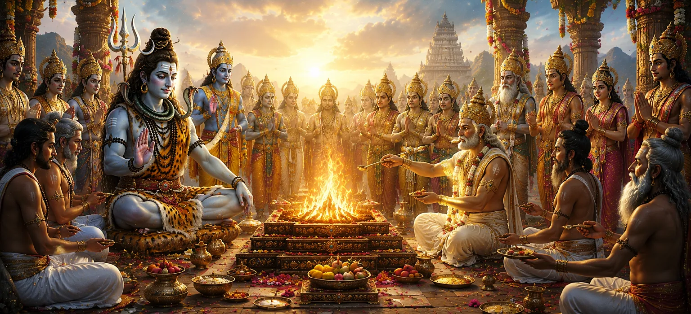

यह अध्याय भगवान शिव की क्षमा और दैवीय हस्तक्षेप के बाद दक्ष के बलिदान के सफल समापन और बहाली का वर्णन करता है। दक्ष और शिव के बीच सुलह के बाद, दिव्य क्षेत्रों में सद्भाव लौट आया, और बाधित यज्ञ को जारी रखने की अनुमति दी गई। यह अध्याय व्यवस्था और धर्म को बहाल करने में पश्चाताप, क्षमा और दैवीय कृपा की शक्ति को प्रदर्शित करता है।
भगवान शिव की करुणा और दक्ष के सच्चे पश्चाताप से, देवताओं और ऋषियों के बीच पीड़ा पैदा करने वाला संघर्ष अंततः समाप्त हो गया। शत्रुता का स्थान समझ ने ले लिया और समस्त दिव्य लोक में शांति बहाल हो गई।
शिव का आशीर्वाद प्राप्त करने के बाद, दक्ष ने पवित्र यज्ञ फिर से शुरू किया। जो अनुष्ठान बाधित हो गए थे उन्हें पवित्र परंपरा के अनुसार बहाल किया गया और यज्ञ एक बार फिर आध्यात्मिक योग्यता और दिव्य पूजा का स्रोत बन गया।
देवताओं ने ख़ुशी-ख़ुशी पुनर्स्थापित बलिदान में भाग लिया। उनकी उपस्थिति एकता, सहयोग और ब्रह्मांडीय संतुलन की पुनर्स्थापना का प्रतीक थी। यज्ञ विभाजन के बजाय दैवीय सद्भाव का उत्सव बन गया।
यज्ञ का समापन भगवान शिव की अनुकंपा से संभव हो सका। अपने द्वारा प्राप्त अनादर के बावजूद, शिव ने दंड के स्थान पर क्षमा और पुनर्स्थापन को चुना। उनके कार्यों से ईश्वरीय दया की असीम प्रकृति का पता चला।
क्षमा विभाजन को दूर करती है और सद्भाव को बहाल करती है।
भक्तिपूर्वक किया गया यज्ञ ईश्वर को अर्पण बन जाता है।
जब धर्म अपनाई जाती है तो ईश्वरीय कृपा संतुलन बहाल करती है।
दक्ष के बलिदान की कहानी अहंकार के खतरों और विनम्रता के मूल्य के बारे में एक कालातीत सबक के रूप में कार्य करती है। यह सिखाता है कि सच्चा पश्चाताप और भक्ति उस चीज़ को भी बहाल कर सकती है जो खोई हुई या नष्ट हो गई हो।
पुनर्स्थापित बलिदान ने संघर्ष पर सद्भाव और अहंकार पर ज्ञान की विजय को चिह्नित किया। शिव की कृपा से, सभी पक्षों को शांति मिली और ब्रह्मांडीय व्यवस्था की पुनः पुष्टि हुई। अध्याय आशा, मेल-मिलाप और आध्यात्मिक नवीनीकरण के संदेश के साथ समाप्त होता है।
यह अध्याय भक्तों को याद दिलाता है कि दैवीय कृपा उस चीज़ को बहाल कर सकती है जो घमंड और संघर्ष ने क्षतिग्रस्त कर दी है। विनम्रता, क्षमा और सच्ची भक्ति के माध्यम से, हृदय के भीतर और पूरे विश्व में सद्भाव को फिर से स्थापित किया जा सकता है।
दक्ष के बलिदान की पुनर्स्थापना ने मेल-मिलाप के गहन लाभों को प्रदर्शित किया। एक बार जब अभिमान, क्रोध और गलतफहमी दूर हो गई, तो देवताओं और ऋषियों के बीच सहयोग और आपसी सम्मान लौट आया। यज्ञ के सफल समापन से पता चला कि विनम्रता और धर्म पर आधारित एकता स्थायी शांति और समृद्धि की ओर ले जाती है।
यज्ञ का समापन भगवान शिव की असीम कृपा का प्रमाण बन गया। जो एक समय विनाश और दुःख का दृश्य था, वह उत्सव और आध्यात्मिक संतुष्टि में बदल गया। अध्याय सिखाता है कि ईश्वरीय कृपा में विभाजन को ठीक करने, पवित्र कर्तव्यों को बहाल करने और सभी प्राणियों को सत्य और सद्भाव की ओर वापस ले जाने की शक्ति है।
"जहां क्षमा और भक्ति एकजुट होती है, वहां दिव्य सद्भाव बहाल होता है।"
सती खण्ड की कहानी दक्ष के बलिदान की पुनर्स्थापना और दैवीय कृपा, क्षमा और सद्भाव की विजय के साथ समाप्त होती है। पार्वती खण्ड में अपनी यात्रा जारी रखें, जहां पवित्र कथा देवी पार्वती के दिव्य अवतार और आध्यात्मिक यात्रा के साथ सामने आती है।